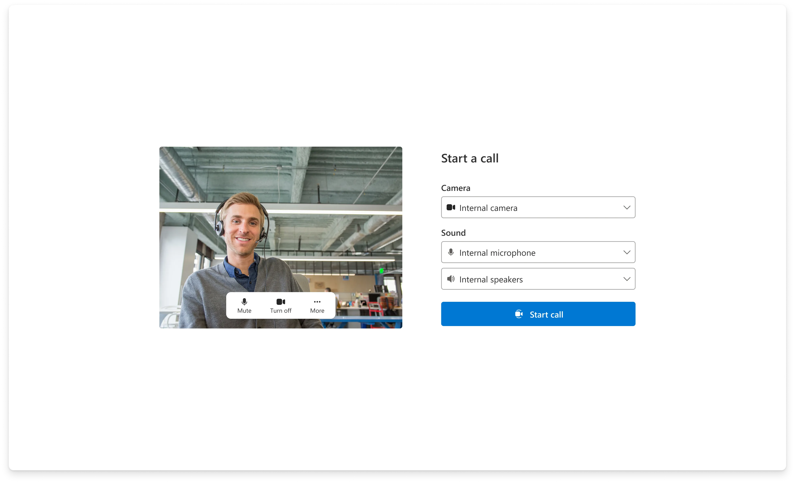
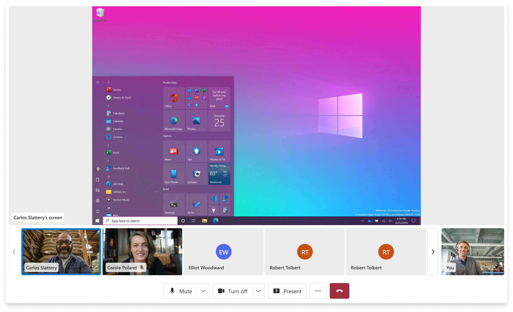
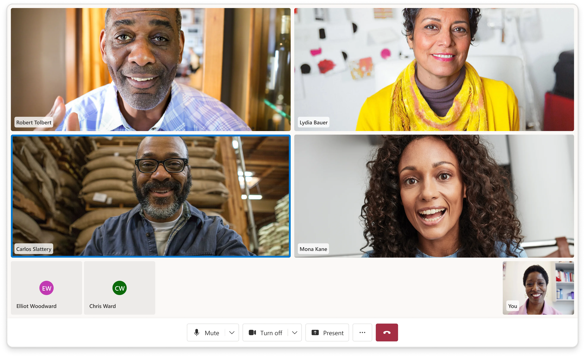
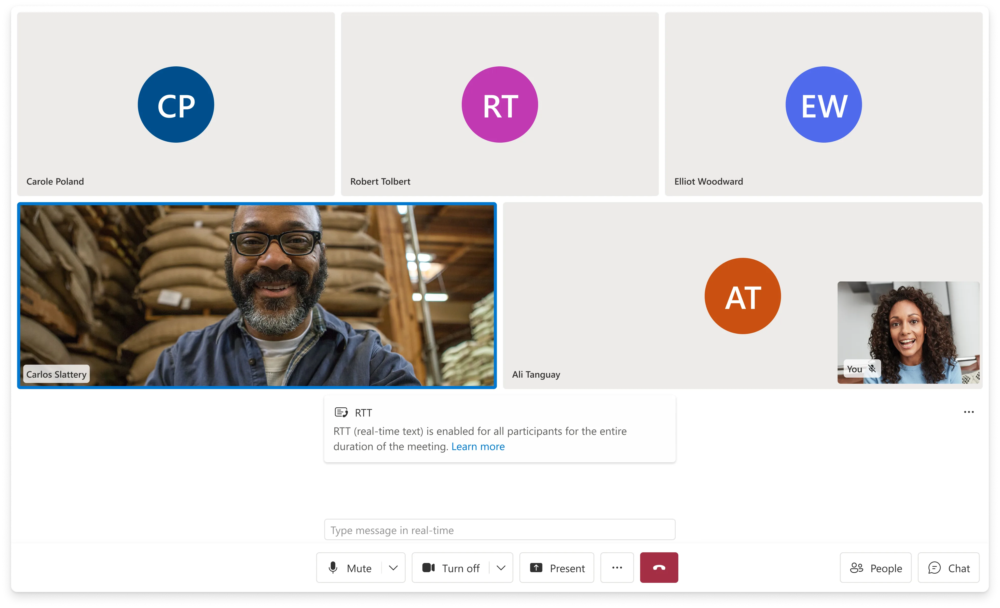
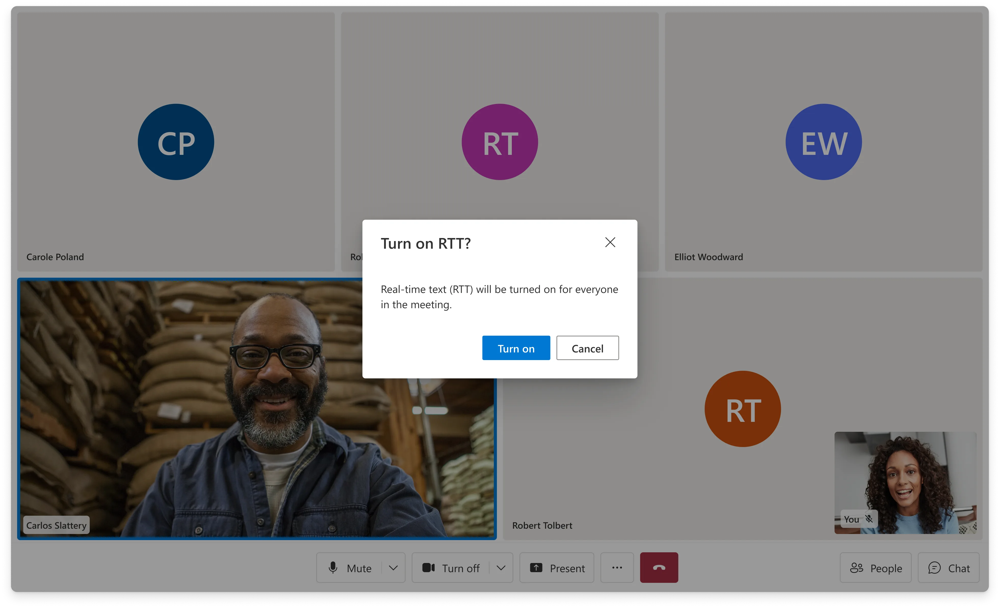
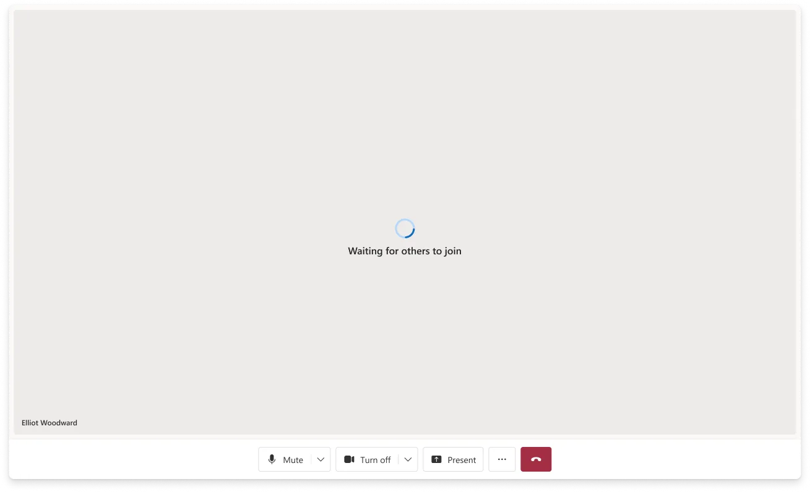
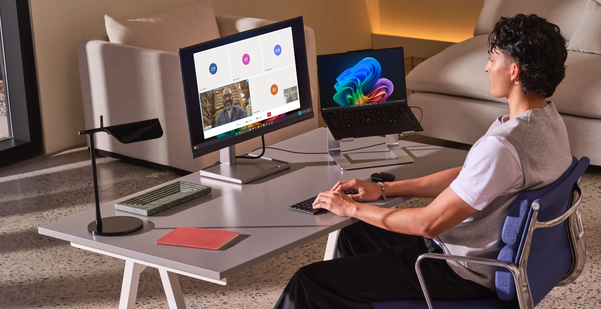

01 · Microsoft · Azure Communication Services
UI Library
Making enterprise communication buildable.



Overview
Developers needed communication experiences that were fast to ship and flexible enough to keep.
Product and design lead for the ACS Web UI Library. I owned both the roadmap and the design system itself — the defaults, components, and accessibility patterns that 200+ businesses ship directly to their users. When a developer adopts the library, their customers inherit our design decisions.
The ACS Web UI Library helps developers build web-based calling and chat experiences without starting from scratch. It provides prebuilt composites for full experiences and lower-level UI components for teams that need deeper control.
Context
A product layer between raw infrastructure and finished experiences.
Before the library, every team building on ACS rebuilt the same calling UI from scratch — device setup, video gallery, participant management, accessibility — typically a multi-month engineering effort before they wrote a line of their own product.
The library sits between raw communication infrastructure and finished product experiences. Too thin, and it doesn't save teams enough work. Too rigid, and customers outgrow it and build custom UI. Every design decision had to answer the same question: how much of the experience should be prebuilt, and where does convenience end and control begin?
Calling SDK
Raw communication primitives for teams with deep engineering capacity and full control needs.
UI Library
Accessible, customizable React components and composites built on top of ACS.
Sample Builder
A guided configuration and deployment path for prototypes, demos, and scenario storytelling.
Designing the defaults
The people using our designs never chose them.
Primary users were developers building telehealth visits, contact centers, click-to-call, and Teams interop. But the people inside those calls — patients, customers, agents — inherited every default we shipped. A button placement, a caption behavior, a device-setup flow could shape a medical appointment or a financial consultation for someone who never knew the library existed.
That meant the design bar for defaults was higher than for a normal product. Every composite had to work out of the box across scenarios that had almost nothing in common — a one-on-one telehealth visit, a support call, an enterprise meeting — while staying customizable enough that teams could make it theirs.

Tradeoff
Prebuilt vs. control
Composites got teams to production fast, but real customers always needed more. We preserved the fast path while exposing lower-level components for teams with specific workflows — knowing that every component we opened up became a permanent API commitment. The discipline was saying no to opening things up until a real customer workflow demanded it.
Deep dives
Two problems worth the depth — and the actual product to handle.
01
Real-Time Text
Real-Time Text transmits text character by character as it's typed — a legally required accessibility capability for live calling. The design problem: text appears before a thought is complete, inside a call surface already carrying video, captions, notifications, and controls. Legibility and hierarchy had to survive all of it.


Tradeoff
Explicit consent over silent convenience
Enabling RTT turns it on for every participant in the call, so we required an explicit confirmation rather than a silent toggle. RTT is a call-wide accessibility channel — a per-person toggle would have fragmented the transcript and left some participants unaware that a legally-protected accommodation was in use. The smoother path was a quiet switch; the right path was making the whole call aware.
02
Calling foundations
I shaped the core calling experience that everything else built on: device setup, video gallery, participant management, control bar, lobby states, and screenshare.
Every one of these surfaces doubled as an API. A design change wasn't just a visual change — it was a contract with every team building on top, which made "predictable" a design requirement equal to "polished."

Other workstreams included Sample Builder, a configure-and-deploy path for prototype experiences, and Call Summary, the first AI feature shipped in ACS.
Outcomes
The product became one of ACS's most-used surfaces.
11.1M+
Monthly minutes on the UI Library by end of 2025, up from roughly 2M at the start of the year.
200+
Businesses onboarded across healthcare, finance, automotive, retail, and enterprise scenarios.
WCAG 2.1 AA
Accessible by default — every composite ships meeting WCAG 2.1 AA out of the box.
The UI Library gave customers a faster path to production-quality communication UI while preserving the flexibility needed to adapt to their brand, workflow, and scenario. It helped shift ACS from raw infrastructure toward a more complete developer experience.
The strongest product outcome was not a single feature. It was a reusable layer that made complex communication experiences easier to build, easier to demo, and easier to adopt.
What stays with me: the hardest defaults to design are the ones you never watch anyone use. You're designing for a stranger three layers of abstraction away — and when a default is wrong, it fails quietly, in someone else's product, for the person least able to route around it.

Want the full walkthrough? Get in touch →
Next Project
Collective IQ
Lead designer on Microsoft's AI-powered meeting knowledge system. Designing how organizations remember.
View case study →